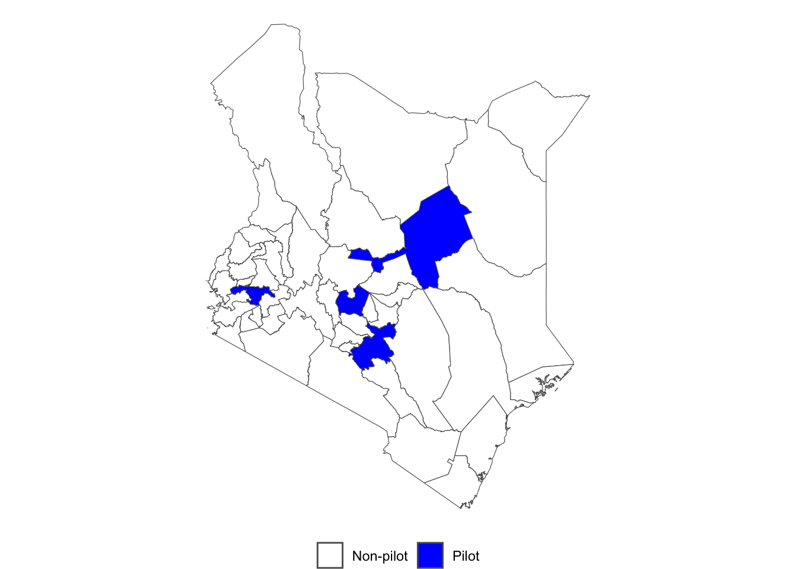
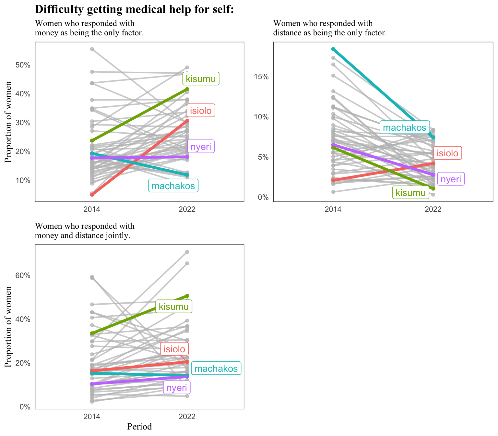

The author is grateful to Angela Langat1 for her helpful comments in the analysis and writing of this article.
1 Link to her socials
Introduction
To mark Kenya’s commitment to the SDG 3 goal on ensuring healthy lives and promoting well-being for all, the government of Kenya introduced the Universal Health Coverage (UHC) in December 20182. The aim of the UHC was to strengthen primary health care in Kenya by ensuring that citizens have access to a progressive health benefit and increase the availability and readiness of key health interventions.
2 Nzwili, Fredrick. 2018. “Kenyan President Launches Benchmark Universal Health Coverage Pilot, To Become Nationwide In 18 Months.” Health Policy Watch (blog). 2018. https://www.healthpolicy- watch.org/kenyan-president-launches- benchmark-universal-health-coverage-pilot- to-become-nationwide-in-18-months/
The first phase of the UHC was conducted in a pilot project targeting 4 counties of Kenya: Isiolo, Kisumu, Machakos and Nyeri. The four counties were chosen on the basis that: they are characterized by high incidence of both communicable and non-communicable diseases especially diabetes and hypertension, high population density, high maternal mortality rates, and high incidence of road traffic injuries. Isiolo was chosen to experiment with how the UHC would fare in a majorly pastoral county.

The UHC was funded by the national government and a directive was given to the county governments to abolish fees in the level 4 and 5 facilities3. The government would then work out a reimbursement plan using conditional grants with the county governments for the forgone fees. The pilot phase of the UHC was intended to run for a year. In this, the government intended to gain lessons and insights that would be useful in scaling up the UHC to the remaining 43 counties nation-wide. Later in February 2022, the president Uhuru Kenyatta rolled out the UHC across all counties after a successful pilot4.
3 ref
4 ref
Data
In this analysis, we set out to investigate the impact of the UHC pilot program on health accessibility in Kenya. Specifically: what was the impact of the pilot UHC program on health accessibility in maternal health indicators such as: ANC attendance and skilled delivery.
The data sources chosen for this study are: the Kenya DHS 2014 and Kenya DHS 2022 and the KNBS national statistical abstracts.
The two are chosen as:
(i). They offer good data on several key maternal and child health indicators such as skilled birth attendance, antenatal care coverage, road accident data, HIV data etc.
(ii). They have data available for the pre and post UHC period, as the 2014 DHS covers the period 2010-2014 (pre UHC) and the 2022 DHS covers the 2020-2022 (post UHC) period. This is useful in studying the impact of the health intervention (rolling out of the UHC). For the statistical abstracts, the data is available for yearly periods.
The assumptions we are making in this study are as follows:
The DHS surveys samples are large enough and nationally representative, and have sufficient coverage of every county. This ensures that the estimates we get from the analysis are robust and reliable.
That the UHC was rolled out perfectly (i.e. that it was actually utilized by the people in the pilot counties), and that peoiple from the non-pilot counties were not able to access the healthcare in the counties selected for the UHC.
Analysis
A set of questions were asked to women aged 15-49 years, on the difficulties they encounter when seeking medical help for themselves when they fall sick. The difficulties asked included: money, distance to health facility, permission to seek care, fear of going alone to health facilities.

The proportion of women who complained about money being the difficulty to health care accessibility in Kisumu and Isiolo rose sharply from 2014 to 2022. Isiolo county rose from a 4% prevalence to a 30% prevalence, a 26% absolute increase. The counties of Nyeri and Machakos experienced drops, albeit not large (Nyeri: 1% absolute decrease, Machakos: 8% absolute decrease).
The proportion of women complaining about distance being a hindrance to health accessibility in Kenya is overall-y low, with the highest county prevalence in 2014 being below 15%, and the highest in 2022 being less than 10% indicating an improvement in health coverage. Among the pilot UHC counties, only Isiolo encountered an increase in the proportion of women complaining about distance being an issue. The rest of the three counties experienced declines in the indicator.
Among women who complained about distance and money jointly, Kisumu was the leading in terms of an increase in that indicator( rise from 33% to 50%). Only Machakos experienced a decline (of 1% absolute) between the two surveys. This is likely insignificant.